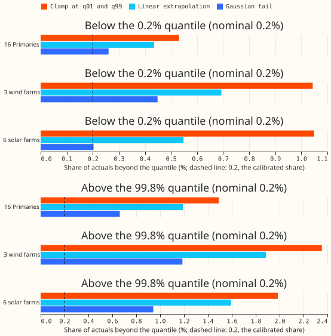
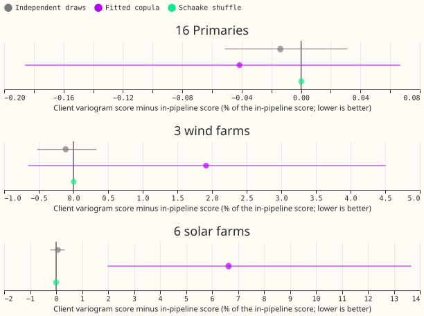
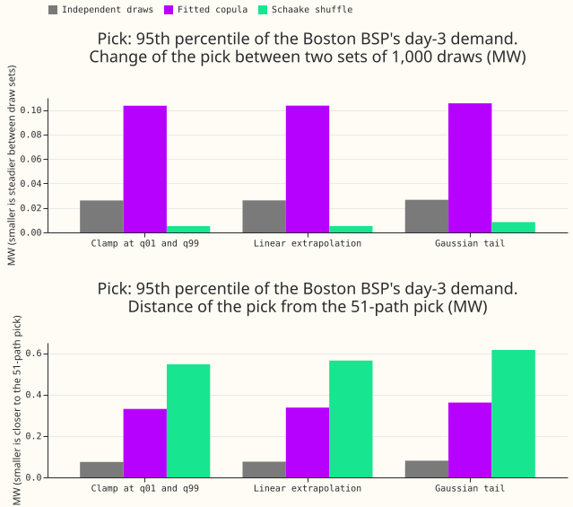
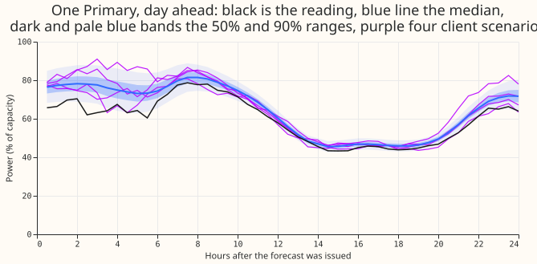
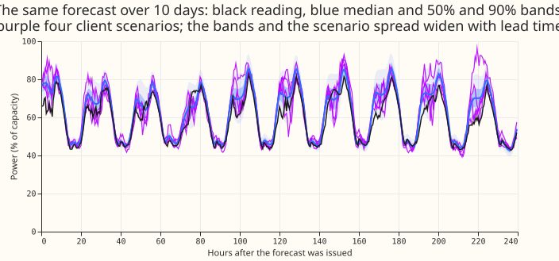

Can NGED rebuild coherent scenarios from stored quantiles alone, and which tail rule should the client use?
Eleven stored quantiles are enough to rebuild the marginal forecasts and a Schaake-shuffle coupling. The tail rule hardly changes scores, but it changes how far the extreme draws reach.
Terms.
- Client: NGED's own Python code, which reads stored forecasts from S3 and builds scenarios.
- Scenario: one possible future path of power for every site and half-hour in a forecast run. A scenario set is coherent if the sites and half-hours within each path move together as they do in reality.
- Stored forecast: 11 quantiles (0.01, 0.05, 0.10, 0.25, 0.40, 0.50, 0.60, 0.75, 0.90, 0.95, 0.99) per site and half-hour.
- Dependence table: the information a client needs to couple the sites and half-hours. This is the fitted copula's 25 by 25 factor and 25 first-order autoregressive terms (the fitted copula), or 51 past observed paths (for the Schaake shuffle, which reorders independent draws into the rank order of past paths).
- Tail rule: how the client extends the quantile function past q01 and q99. Clamp repeats the q01 and q99 values. Linear extrapolates the line through the outer two levels. Gaussian extends a normal distribution fitted to the outer two levels.
- Primaries: 16 NGED primary substations. Their power is in MW or MVA. A BSP (bulk supply point) is the substation that feeds a group of Primaries.
- CRPS (continuous ranked probability score) scores one site's marginal forecast. The variogram score scores how well a scenario set's coupling matches reality. Exceedance is the share of actuals above a quantile (or below it, for levels under 0.5).
- Ensemble-rank component: the part of the pipeline's coupling that reuses the ranks of the weather ensemble's members.
- J0, J3, J5: experiment 436's 51-path scenario sets with independent, Schaake-shuffled, and fitted-copula-plus-member-rank coupling. N is the in-pipeline reference for the marginals: J0 for CRPS, and the stored quantiles for exceedance. M is the mixture arm.
- K1, K3: two neural networks of the bake-off, scored on the 16 Primaries. D3 is one Primary.
- NGED is National Grid Electricity Distribution.
We asked whether NGED can draw scenarios as good as the ones our pipeline builds, if they hold only the stored forecast and a dependence table. We wrote a 70-line client helper that inverts the quantile function by linear interpolation, extends it past q01 and q99 by one of the three tail rules, and draws 1,000 scenarios per forecast run. We scored those against the 51 scenarios of experiment 436, as corrected by experiment 625, on 44 forecast runs for 16 Primaries, 3 wind farms, and 6 solar farms. We also scored a second set of forecasts from the bake-off's neural networks K1 and K3 for the 16 Primaries. The answer is yes for the marginal forecasts and for the Schaake shuffle, and no for one coupling: the fitted copula for solar farms.
Mixture parameters (arm M) are not available for demand and not stored for wind and solar. The Primaries in the 44-run set come from an XGBoost fit, whose output is a set of quantiles rather than a mixture. The wind and solar neural networks are mixture-density networks, but only their 11 quantiles were stored. The neural networks for demand have 3 mixture components, and the export stores only the mean of 5 seeds' quantiles. That mean is not any single mixture, and pooling the seeds would give 15 components. Recovering the parameters needs a rebuild of the inference of experiments 612 and 613, about a day of work, and was not done.

Look at how far each bar sits from 0.2%, the share a calibrated forecast would give. The Gaussian tail is nearest on the lower side. All three rules overshoot on the upper side, because the stored upper quantiles are too narrow. 44 runs; the three families are scored separately. The two panels have different horizontal scales, and the bars are point estimates with no intervals: the share from month to month varies by more than the sampling error.

Look at the purple fitted-copula dot for the solar farms: about 6.6% above the in-pipeline score. Every other dot is within 2% of zero. Zero means the client's 51 stratified paths score the same as experiment 436's 51 paths, over days 1 to 10. Lines are 98.33% month-block intervals; for the Schaake shuffle they are narrower than the dot. The panels have different horizontal scales.

Top panel: the Schaake shuffle's pick changes least between draw sets, but its 1,000 draws repeat 51 distinct paths, so the two sets are not independent information. The fitted copula changes by 0.1 MW. Bottom panel: the Schaake shuffle's pick sits furthest (0.6 MW) from the 51-path pick, and the fitted copula 0.36 MW. The tail rule barely changes either panel. The pick is the 95th percentile over scenarios of the Boston BSP's summed Primaries on day 3 (leads 48.5 to 72 hours), from neural network K1 at 82 origins; MVA Primaries are added as if MW. The Skegness BSP is computed and not drawn. No intervals are shown.

One Primary (D3), forecast from neural network K1. We drew the forecast run, out of the five development months' runs, with the most scored half-hours. Black is the reading, the blue line the median, and the blue bands the 50% and 90% ranges. The purple lines are four of the client's 1,000 copula scenarios with a Gaussian tail (one random draw, not an average). Look at how the scenarios scatter around the median.

The same forecast and scenarios over 10 days. Look at how the bands and the spread of the scenarios widen with lead time.
Numbers
- Marginal skill (CRPS, days 1 to 10, 44 runs, 98.33% month-block intervals). 1,000 client draws with a Gaussian tail against the 51 in-pipeline values: demand +0.09% (-0.07% to +0.28%), wind -0.06% (-0.28% to +0.16%), solar +0.02% (-0.12% to +0.19%). At 12 to 36 hours: demand +0.16%, wind +0.32% (-0.09% to +0.73%), solar +0.11% (-0.33% to +0.57%). Absolute scores in points of capacity: demand 5.02, wind 10.43, solar 8.57. At 51 stratified paths the client equals the pipeline exactly, because all 51 levels lie inside the stored q01 to q99.
- Marginal skill by lead band (CRPS, 1,000 draws with a Gaussian tail against the 51 values). 0 to 12 h: demand +0.12%, wind -0.15%, solar +0.07%. 12 to 36 h: +0.16%, +0.32%, +0.11%. 36 to 120 h: +0.19%, +0.01%, +0.03%. 120 to 240 h: +0.01%, -0.12%, +0.00%. Every interval spans zero except demand at 36 to 120 h (+0.00% to +0.41%). The largest upper bound is +0.74% (wind, 12 to 36 h), so all 12 cells are within 1%.
- Tail rule on CRPS. Gaussian against clamp, days 1 to 10: -0.01% in every family. The tail rule changes the extreme 0.2% of a distribution, which contributes almost nothing to CRPS.
- Exceedance at q01, q05, q95, q99. The client's quantile function equals the stored knots at these levels, so the difference is 0.00 percentage points in every lead band and family. The in-pipeline 51 paths cannot resolve q01 and q99 and differ from the stored quantiles by up to 3.5 percentage points (J5, solar). Stored quantiles are off nominal too, and the J5 paths are often closer to nominal than the stored knots at q01, q05, and q95; only at q99 are the knots closer. The stored q99 holds 1.0% to 1.6% of actuals for the Primaries, 1.4% to 2.7% for wind farms, and 1.6% to 2.6% for solar farms. The stored q95 holds 3.7% to 6.1% for Primaries, 4.8% to 8.3% for wind, and 5.6% to 6.8% for solar. The knots are up to 3.3 points off nominal (wind q95).
- Past the knots (share of actuals beyond the quantile; nominal 0.2% at the 0.2% and 99.8% levels). Below the 0.2% quantile: Primaries 0.53% (clamp), 0.44% (linear), 0.26% (Gaussian); wind 1.04%, 0.69%, 0.45%; solar 1.05%, 0.55%, 0.20%. Above the 99.8% quantile: Primaries 1.49%, 1.19%, 0.66%; wind 2.35%, 1.89%, 1.19%; solar 1.99%, 1.59%, 0.94%.
- Sampling error at q99. The binomial standard error of the q99 exceedance is 0.02 to 0.07 percentage points, but the 10-month spread of the monthly rate has a standard deviation of 1.1 to 1.4 points (the half-hours of a month are strongly correlated), so a q99 exceedance should be read to the nearest point, not to the nearest tenth.
- Coherence (variogram score at 51 stratified client paths against experiment 436's 51 paths, days 1 to 10). Independent draws against J0: demand -0.0%, wind -0.1%, solar +0.1%. Schaake shuffle against J3: +0.0% in demand and wind, and -0.0% in solar. Fitted copula (no ensemble-rank component) against J5: demand -0.0%, wind +1.9% (-0.7% to +4.5%), solar +6.6% (+2% to +14%). The J5 paths use the stored member ranks, and the copula does not, which is the likely cause of the solar gap; we did not run an ablation. Against independent client draws, the copula scores -0.7% for Primaries, -27.9% (-32.8% to -22.1%) for wind farms, and -39.1% (-43.5% to -34.4%) for solar farms. The Schaake shuffle scores +0.4% (-1.2% to +2.2%) for Primaries, -28.2% for wind farms, and -40.2% for solar farms.
- Query picks, 44 runs, day 3 (points of capacity). The client's Schaake shuffle matches J3 on the variogram score but not on these picks (lowest wind 10.7 against 11.9; solar 318 against 358), so it does not reproduce the pipeline's shuffle path for path. Lowest-wind scenario: independent 27.8, fitted copula 11.4, Schaake shuffle 10.7, in-pipeline J5 15.1 and J3 11.9; the picks of two independent sets of 1,000 differ by 0.46 (independent), 1.9 (copula), and 0.07 (Schaake, which repeats 51 paths). Fifth percentile of summed solar output: independent 586, copula 442, Schaake 318, against J5 404 and J3 358, with set-to-set differences of 1.8, 7.7, and 4.2. A Gaussian tail makes the lowest-wind pick lower and less steady than clamping (copula: 11.4 against 12.0 points; set-to-set difference 1.9 against 1.4).
- Query pick, neural networks (82 complete origins each), 95th percentile of each BSP's summed Primaries on day 3 (MW; MVA Primaries are added as if MW). Boston, K1: fitted copula 40.5 MW, Schaake shuffle 42.3 MW; two draw sets differ by 0.11 MW (copula) and 0.01 MW (Schaake); the pick sits 0.36 MW (copula) and 0.62 MW (Schaake) from the 51-path pick. K3 gives the same pattern (40.5 MW, 42.5 MW, 0.12 and 0.01, 0.38 and 0.68). The map from Primary to BSP is NGED's hierarchy file; all 16 Primaries sit under Boston or Skegness.
- Neural networks, marginal skill (CRPS, % of capacity, 82 origins, 5 months). K1: 4.684 for 1,000 copula draws with a Gaussian tail against 4.692 for the 51 values (-0.16%, -0.45% to +0.26%). K3: 4.916 against 4.923 (-0.15%, -0.41% to +0.12%). The Schaake shuffle gives -0.20% and -0.21%. Stored q95 holds 7.6% to 8.1% of event-free actuals (K1) and 8.5% to 10.2% (K3); q99 holds 1.9% to 2.3% (K1) and 2.4% to 3.1% (K3). Past the knots, Gaussian: 0.21% (K1) and 0.16% (K3) below the 0.2% quantile; 0.59% and 0.82% above the 99.8% quantile.
- Storage per forecast run. 11 quantiles for 25 sites and 702 half-hours: 772 kB as float32 (337 kB for the 16 Primaries over 479 half-hours). Fitted copula: 2.6 kB (a 25 by 25 factor and 25 autoregressive terms), refitted rarely. Schaake history: 3.6 MB for 51 paths per run, or one 3.1 MB compressed history of all sites shared by every run. Client code: 70 non-blank lines.
- What 13 delivery levels would add. The 13 NGED delivery quantiles (0.01, 0.02, 0.05, 0.10, 0.20, 0.35, 0.50, 0.65, 0.80, 0.90, 0.95, 0.98, 0.99) share only 0.01, 0.05, 0.10, 0.50, 0.90, 0.95, and 0.99 with the 11 stored levels. They add 0.02 and 0.98 in the tails and 0.20, 0.35, 0.65, 0.80 in the body. This experiment cannot measure the effect: the networks would need to output the 13 levels, so the stored forecasts would be re-predicted. The tail rule would still apply past q01 and q99, and the extra 0.02 and 0.98 levels would make a linear tail rule (extrapolating from 0.01 and 0.02) shorter and steeper than now (from 0.01 and 0.05).
Checks
- Median minus mean forecast, per site: not computed. No forecast was fitted; the scenarios are rebuilt from stored quantiles, and the client draws equal the stored marginals by construction.
- Error of the mean forecast beside each score contrast: not applicable, for the same reason.
- Triggers. Trigger 2 fired once: the prediction that a Gaussian tail gives the steadiest picks (P3) failed. The Gaussian tail extends the tail further than clamping does, so the extreme picks move more between draw sets, and the Schaake shuffle looks steadiest only because its draws repeat 51 paths. That explanation is a hypothesis; the Schaake shuffle's steadiness follows from the repeated paths. No other trigger fired, so no audit ran.
Caveats and what to try next
- Predictions. P1 (CRPS moves up to 2% between tail rules for wind and solar): refuted, the difference is under 0.02%. P2 (outer exceedance within 1 percentage point of nominal): refuted. The client equals the stored knots exactly, and the knots are off nominal by up to 3.3 points (wind q95; the neural K3 q95 reaches 10.2%). The second half of P2, that the 51 pipeline paths sit further from nominal, is mixed: J5 is often closer than the knots at q01, q05, and q95. P3: refuted (above). P4 (fitted copula within 3% of J5 for demand and wind, up to 10% worse for solar): supported (-0.0%, +1.9%, +6.6%).
- Decision rule.
Q11 sufficient: the best tail rule is within 1% of the in-pipeline arm on CRPS in every family and lead band, and equal to it on exceedance at the four outer levels. The stop rule (a client arm more than 2% worse than the in-pipeline arm) fired for the fitted copula on solar farms, +6.6%. The likely cause is that J5 also uses the stored member ranks, not the quantile form, so the quantile form was probably not at fault. We did not test that by ablation. No neural network was rebuilt. - Rows. The 44 runs are experiment 436's Tuesday runs of 2025-09 to 2026-06 (XGBoost demand
from experiment 425, wind from experiment 429, solar from experiment 430). The neural-network
set has 82 of the 153 origins of each network, because the 71 origins that lack some Primary's
rows were skipped. Half-hours on or after 2026-07-01 were never scored. The July to October 2026
window was not opened. The solar clipping shares in
data-processing.mdcome frome00628_clip_check.py. - Calibration of the stored quantiles. The Primaries' stored upper quantiles are too narrow (q99 exceedance 1.0% to 1.6% for XGBoost and 1.9% to 3.1% for the neural networks), consistent with experiment 626's finding for demand tails. Experiment 626 was still open when this was written. These results hold the scenarios to the stored marginals, so a client inherits that bias.
- The copula has no tail dependence. The fitted Gaussian copula cannot put several Primaries or farms in the extreme tail together more often than its correlations imply. This experiment did not test joint extremes.
- Day 3 means leads 48.5 to 72 hours. The BSP pick adds MW and MVA Primaries as if both were MW. Unlogged load shifts may lie in event-free rows (NGED's logs are incomplete), so the neural-network coverage figures are lower bounds on the harm.
- Reuse. The scripts import experiments 87, 310, 347, 377, 429, 434, 436, and 625. Experiment 436's joint-block scoring is not used; experiment 625's corrected joint rows are.
- Next. Ask NGED which of the three query types they will run. If they want the pipeline's J5 coupling for solar farms, store the member ranks. If they want tails beyond the 0.2% level, widen the stored upper quantiles before storage (experiment 626).